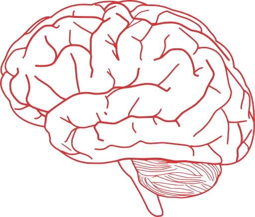

Neuroscientist, database engineer, and web developer.
I have always loved science, physics in particular. Alongside my fascination with science is my love of music.
In September 2020 I began Udemy's complete web development course, taught by Angela Yu, founder and lead developer at appbrewery. This site was developed with the help of that course.
From August 2019 to July 2020 I did two internships in business consultancy programs. Firstly, I worked at The Next Web B.V. as a startup scout. I participated in a number of programs for clients ranging from startup incubators to Forbes 500 companies. Secondly, I managed a student consultancy project under the Tesla Minor program at the University of Amsterdam. We collaborated with the Royal Dutch National Standardisations Institute in making their new protocol for measuring circular construction more accessible to the construction industry.
I'm always on the lookout for a new challenge... and fellow hobbyists!
We can Jam, throw frisbees and build awesome code together!